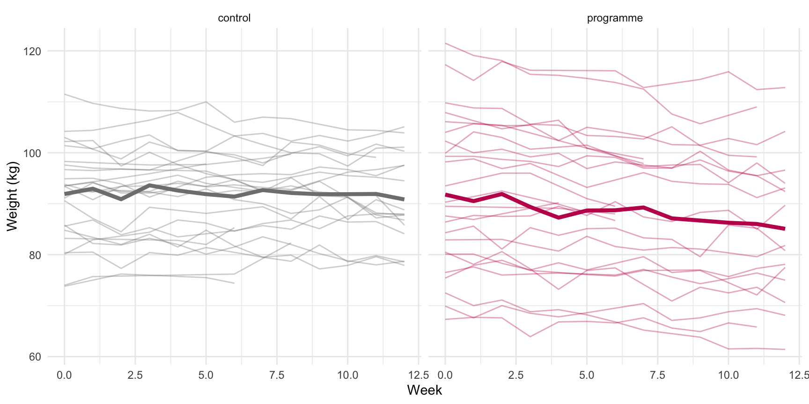
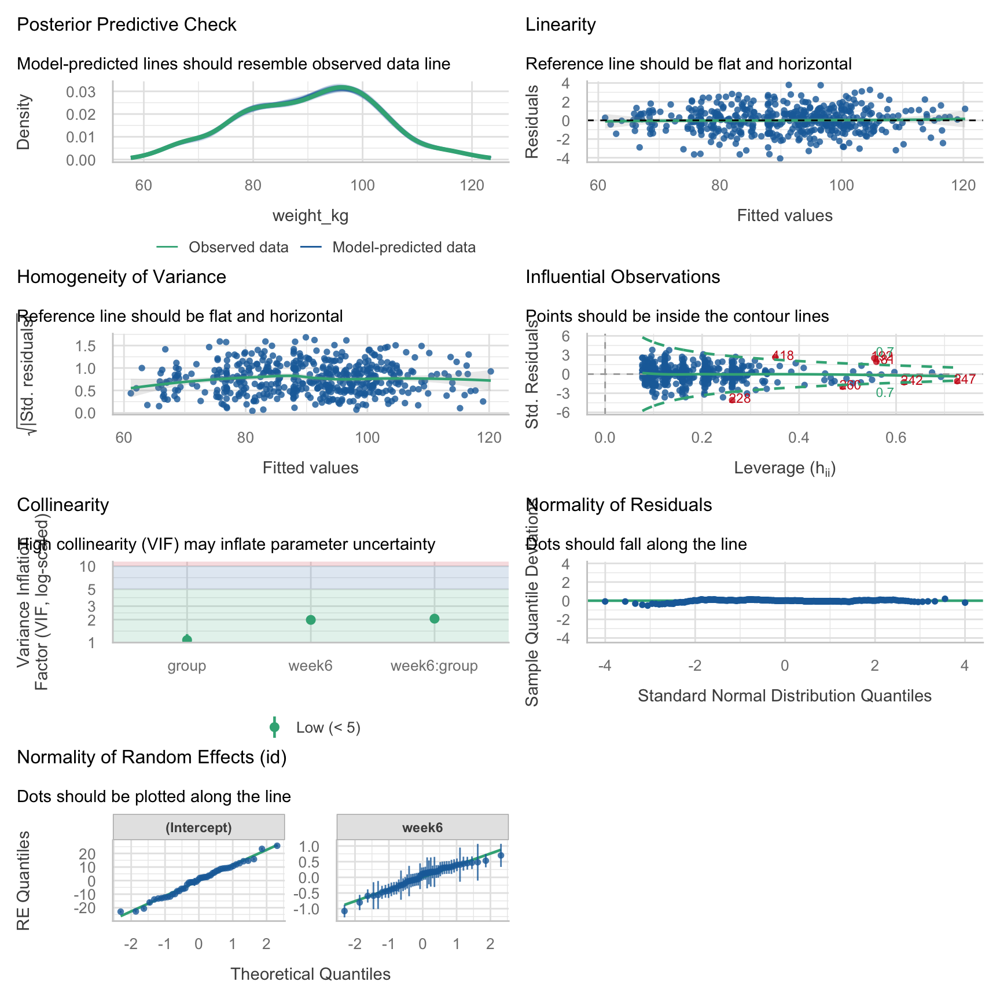
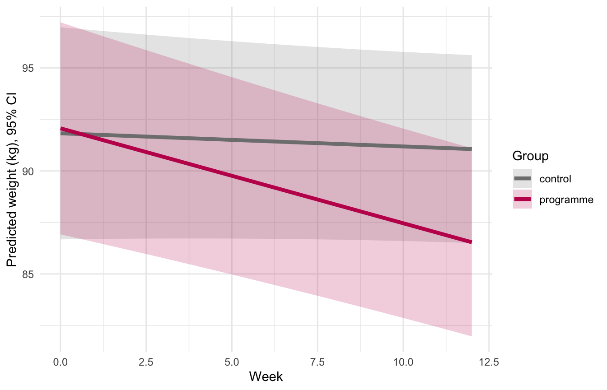
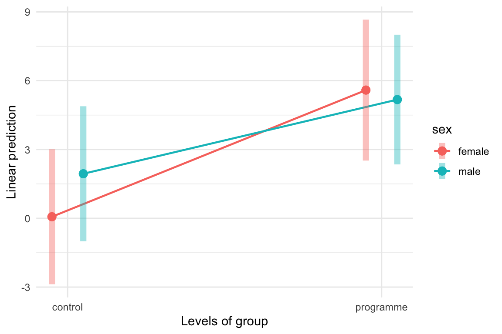
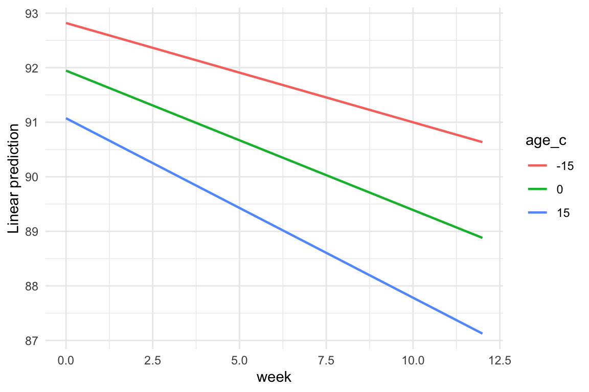
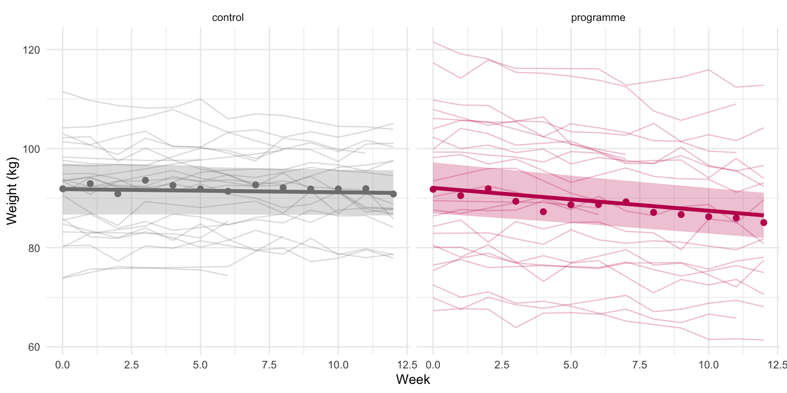

library(here)
here::i_am(".root-practicals")
library(renv)
renv::load(here::here())
renv::install(c("performance", "see", "modelbased"))
renv::snapshot()Seminar 6 — The Mixed-Model Workflow
PSY40760 Advanced Data Analysis and Statistics in R
Worksheet 6
Welcome
This week brings everything together in one workflow: nine steps that take you from a research question to a written report. Part 1 walks through the nine steps on the weekly weigh-ins from Seminar 5, with the full R code for each step. Part 3 gives you a new data set, from a vocabulary-learning study, and you apply the nine steps yourself.
This practical is not assessed and has no deadline. It is, however, the best preparation for the final exam: the exam’s analysis question follows the same steps.
Session at a glance
| Date | Friday 27 November 2026 |
| Room | QUI-013 |
| Time | 170 min |
| Staff | Dr Ondrej Zika, Cameron McCabe |
| Theory | Checking a model (residuals, Q–Q, Cook’s distance, VIF); singular fits; the nine-step workflow; interactions and simple effects; emmeans and modelbased; plotting the model against the data; reporting |
| Practical | The nine steps in R: a joint walkthrough on the weekly weigh-ins, then the same steps on a new data set |
Before you arrive
1. Environment
Get this week’s files: download them, do not clone the repository. Inside your existing course folder psy40760-practicals-2026, create a folder called seminar-06-advanced-mixed-models (exact name). From GitHub, download seminar-06-worksheet.qmd and the folder seminar-06-worksheet_files (with all its files) into it, keeping the same structure:
psy40760-practicals-2026/
├── .root-practicals
├── renv.lock
├── ...
└── seminar-06-advanced-mixed-models/
├── seminar-06-worksheet.qmd
└── seminar-06-worksheet_files/Do not download or clone the whole repository again: that would overwrite your earlier worksheets and your renv set-up. (Only if you cloned the repository with git in the first week: run git pull instead.)
Then use the course folder as in previous weeks (here + renv, see the environment set-up guide). This week adds three packages from the easystats family:
performance checks a fitted model (check_model(), check_collinearity()), see draws its plots, and modelbased estimates means, slopes and contrasts from a model. lme4, lmerTest, pbkrtest and emmeans are already installed from Seminar 5.
2. Reading
| Theory | Brown, V. A. (2021). An introduction to linear mixed-effects modeling in R. AMPPS, 4(1): the sections on interactions and convergence. |
| Barr, Levy, Scheepers & Tily (2013). Random effects structure for confirmatory hypothesis testing: Keep it maximal. Journal of Memory and Language, 68(3). | |
| Practical | emmeans vignettes and modelbased documentation |
Part 1: Joint walkthrough — the nine steps
The data are the weekly weigh-ins from Seminar 5: 48 people in a 12-week weight-loss trial (control or programme), weighed every week from week 0 to week 12. Each step below matches a slide in the theory block; the code for every step is given in full. Read it, run it, and answer the Check questions.
| Step | What you do | Main functions |
|---|---|---|
| 1 | Write the question as a comparison | (comments, before any code) |
| 2 | Inspect the data | str(), factor(), colSums(is.na()), table() |
| 3 | Plot the raw data | ggplot() |
| 4 | Specify the model | centring, the lmer() formula |
| 5 | Fit, then check the fit | lmer(), isSingular(), VarCorr(), check_collinearity() |
| 6 | Check the assumptions | check_model() |
| 7 | Understand the interactions | summary(), emtrends(), estimate_slopes(), interaction plot |
| 8 | Ask the model your questions | anova(), emmeans(), pairs(), final plot |
| 9 | Report | the numbers from steps 5–8 |
1.0 Load the packages and the data
library(dplyr)
library(ggplot2)
library(lme4)
library(lmerTest) # loads after lme4: lmer() now also reports df and p-values
library(emmeans)
library(performance)
library(modelbased)
emm_options(lmer.df = "satterthwaite") # the same df method as lmerTest
options(modelbased_backend = "emmeans") # modelbased uses emmeans (otherwise it needs marginaleffects)
grp_cols <- c(control = "grey50", programme = "#C2185B")
weekly <- read.csv("seminar-06-worksheet_files/trial_a_weekly.csv")Step 1 — Write the question as a comparison
Before touching the data, write down what you want to estimate. The trial asks: does the programme change weight loss? As comparisons:
# Main question: the rate of weight loss, programme - control (kg/week) -> the week:group interaction
# Secondary question: the weight difference at week 12 (kg) -> emmeans() at week 12Writing this first fixes the model (step 4) and the contrasts (step 8), and protects you against testing many comparisons after seeing the results.
Step 2 — Inspect the data
str(weekly)'data.frame': 481 obs. of 6 variables:
$ id : chr "P01" "P01" "P01" "P01" ...
$ group : chr "control" "control" "control" "control" ...
$ sex : chr "female" "female" "female" "female" ...
$ age : int 43 43 43 43 43 43 43 43 43 43 ...
$ week : int 0 1 3 4 6 7 8 9 10 11 ...
$ weight_kg: num 104 104 106 108 103 ...id, group and sex came in as text (chr). Make them factors, and choose the reference level on purpose (control):
weekly <- weekly %>%
mutate(id = factor(id), sex = factor(sex),
group = factor(group, levels = c("control", "programme")))
colSums(is.na(weekly)) # missing values per column id group sex age week weight_kg
0 0 0 0 0 0 table(table(weekly$id)) # number of weigh-ins per person
3 4 5 10 11 12 13
4 4 4 1 7 18 10 Check: how many people and how many rows are there? There are no NAs, yet some weigh-ins are missing. Where can you see that? week stays a number: what would change if it were a factor?
Step 3 — Plot the raw data
ggplot(weekly, aes(x = week, y = weight_kg, group = id, colour = group)) +
geom_line(alpha = 0.35) + # one line per person
stat_summary(aes(group = group), fun = mean, geom = "line", linewidth = 1.5) + # group mean per week
facet_wrap(~ group) +
scale_colour_manual(values = grp_cols, guide = "none") +
labs(x = "Week", y = "Weight (kg)") +
theme_minimal()
Check: do people start at similar weights? Are the lines parallel? What does each answer imply for the random part of the model?
Step 4 — Specify the model
Centre week at 6, as in Seminar 5, so that 0 is the middle of the trial. The fixed part comes from the question (week6 * group); the random part comes from the design: each person has their own start and their own rate, (1 + week6 | id). group does not vary within a person, so it cannot have a random slope.
weekly <- weekly %>% mutate(week6 = week - 6)The model we will fit: weight_kg ~ week6 * group + (1 + week6 | id).
Step 5 — Fit, then check the fit
m <- lmer(weight_kg ~ week6 * group + (1 + week6 | id), data = weekly)
isSingular(m) # FALSE: no variance at 0, no correlation at +-1[1] FALSEVarCorr(m) # SDs of the random effects and the residual SD Groups Name Std.Dev. Corr
id (Intercept) 11.51491
week6 0.41824 -0.299
Residual 1.43990 No convergence warning was printed, so the optimiser found the maximum. Next, check that the predictors are not redundant:
check_collinearity(m)# Check for Multicollinearity
Low Correlation
Term VIF VIF 95% CI adj. VIF Tolerance Tolerance 95% CI
week6 1.98 [1.75, 2.28] 1.41 0.50 [0.44, 0.57]
group 1.08 [1.02, 1.29] 1.04 0.93 [0.78, 0.98]
week6:group 2.06 [1.82, 2.37] 1.43 0.49 [0.42, 0.55]Check: fill in: “Weights at week 6 varied between people with SD = ___ kg; rates varied with SD = ___ kg/week.” Are all VIFs below 5?
Step 6 — Check the assumptions
check_model(m)
Check: is the residuals-versus-fitted band flat and even? Do the residuals and both random effects (intercepts and week6 slopes) follow their Q–Q lines? Which assumption cannot be checked with a plot?
Step 7 — Understand the interactions
7.1 Read the coefficients
summary(m)$coefficients Estimate Std. Error df t value Pr(>|t|)
(Intercept) 91.44436421 2.35359181 46.04994 38.8531112 7.526134e-37
week6 -0.06380737 0.09125082 42.99063 -0.6992526 4.881604e-01
groupprogramme -2.14129449 3.32910802 46.08418 -0.6432037 5.232798e-01
week6:groupprogramme -0.39714584 0.12964056 43.42105 -3.0634381 3.750696e-03With week6 centred and control as the reference level:
(Intercept): the control group’s weight at week 6;week6: the control group’s slope (kg/week);groupprogramme: programme − control at week 6 only (a simple effect, not a main effect);week6:groupprogramme: how much steeper the programme slope is: the interaction is a difference in slopes.
7.2 Plot the interaction
An interaction must be plotted. emmeans() gives the model’s predicted weight in each group at any week; drawing these predictions shows the two lines and their difference in slope.
grid <- as.data.frame(emmeans(m, ~ group | week6, at = list(week6 = seq(-6, 6, 0.5))))
grid$week <- grid$week6 + 6 # back to weeks 0-12
ggplot(grid, aes(x = week, y = emmean, colour = group, fill = group)) +
geom_ribbon(aes(ymin = lower.CL, ymax = upper.CL), alpha = 0.2, colour = NA) +
geom_line(linewidth = 1.5) +
scale_colour_manual(values = grp_cols) + scale_fill_manual(values = grp_cols) +
labs(x = "Week", y = "Predicted weight (kg), 95% CI", colour = "Group", fill = "Group") +
theme_minimal()
7.3 The slopes by group and their contrast
emtrends() estimates the slope of week6 in each group; pairs() compares the slopes. The same with modelbased: estimate_slopes() and estimate_contrasts().
et <- emtrends(m, ~ group, var = "week6")
et # slope in each group, with 95% CI group week6.trend SE df lower.CL upper.CL
control -0.0638 0.0913 43.0 -0.248 0.120
programme -0.4610 0.0921 43.9 -0.647 -0.275
Degrees-of-freedom method: satterthwaite
Confidence level used: 0.95 pairs(et, reverse = TRUE) # programme - control: the interaction contrast estimate SE df t.ratio p.value
programme - control -0.397 0.13 43.4 -3.063 0.0038
Degrees-of-freedom method: satterthwaite estimate_slopes(m, trend = "week6", by = "group")Estimated Marginal Effects
group | Slope | SE | 95% CI | t | df | p
------------------------------------------------------------------
control | -0.06 | 0.09 | [-0.25, 0.12] | -0.70 | 42.99 | 0.488
programme | -0.46 | 0.09 | [-0.65, -0.28] | -5.01 | 43.85 | < .001
Marginal effects estimated for week6estimate_contrasts(m, contrast = "week6", by = "group") # control - programmeMarginal Contrasts Analysis
Level1 | Level2 | Difference | 95% CI | SE | t(42.99) | p
-------------------------------------------------------------------------
control | programme | 0.40 | [0.14, 0.66] | 0.13 | 3.06 | 0.004
Variable predicted: weight_kg
Predictors contrasted: week6
p-values are uncorrected.Check: is the pairs() estimate the same as week6:groupprogramme in 7.1? Why does estimate_contrasts() give the opposite sign?
7.4 Lower-order terms are simple effects
Refit with week centred at 0 and at 12. The group coefficient changes; the slopes do not.
m0 <- lmer(weight_kg ~ week * group + (1 + week | id), data = weekly)
m12 <- lmer(weight_kg ~ I(week - 12) * group + (1 + I(week - 12) | id), data = weekly)
c(week0 = fixef(m0)["groupprogramme"],
week6 = fixef(m)["groupprogramme"],
week12 = fixef(m12)["groupprogramme"]) week0.groupprogramme week6.groupprogramme week12.groupprogramme
0.241580 -2.141294 -4.524168 emtrends(m0, ~ group, var = "week") # identical slopes to 7.3 group week.trend SE df lower.CL upper.CL
control -0.0638 0.0913 43.0 -0.248 0.120
programme -0.4610 0.0921 43.9 -0.647 -0.275
Degrees-of-freedom method: satterthwaite
Confidence level used: 0.95 Check: what does groupprogramme estimate in each of the three models? Which value of week would you choose for the report, and why must you choose it before seeing the results?
7.5 Other kinds of interaction
Categorical × categorical (one row per person, Seminar 4 data): each lower-order term is a difference at the reference level of the other factor; the interaction is a difference of differences.
trial <- read.csv("seminar-06-worksheet_files/trial_a.csv") %>%
mutate(group = factor(group, levels = c("control", "programme")), sex = factor(sex))
m_kk <- lm(loss_kg ~ group * sex, data = trial)
summary(m_kk)$coefficients Estimate Std. Error t value Pr(>|t|)
(Intercept) 0.06666667 1.460495 0.04564663 0.96379845
groupprogramme 5.52424242 2.111872 2.61580339 0.01215003
sexmale 1.87500000 2.065452 0.90779172 0.36893358
groupprogramme:sexmale -2.28898601 2.926092 -0.78226726 0.43824727pairs(emmeans(m_kk, ~ group | sex), reverse = TRUE) # programme effect within each sexsex = female:
contrast estimate SE df t.ratio p.value
programme - control 5.52 2.11 44 2.616 0.0122
sex = male:
contrast estimate SE df t.ratio p.value
programme - control 3.24 2.03 44 1.597 0.1173emmip(m_kk, sex ~ group, CIs = TRUE) + theme_minimal() # interaction plot: parallel lines = no interaction
Continuous × continuous: choose values of one predictor and estimate the slope of the other at each (simple slopes).
weekly <- weekly %>% mutate(age_c = age - 45)
m_cc <- lmer(weight_kg ~ week * age_c + (1 + week | id), data = weekly)
summary(m_cc)$coefficients["week:age_c", ] Estimate Std. Error df t value Pr(>|t|)
-0.004901889 0.007069991 42.676668525 -0.693337386 0.491854291 emtrends(m_cc, ~ age_c, var = "week", at = list(age_c = c(-15, 0, 15))) # ages 30, 45, 60 age_c week.trend SE df lower.CL upper.CL
-15 -0.182 0.1300 44.4 -0.445 0.0805
0 -0.256 0.0708 42.4 -0.398 -0.1128
15 -0.329 0.1250 40.7 -0.581 -0.0774
Degrees-of-freedom method: satterthwaite
Confidence level used: 0.95 emmip(m_cc, age_c ~ week, at = list(age_c = c(-15, 0, 15), week = 0:12)) + theme_minimal()
Check: in each plot, do the lines run in parallel? How does that relate to the size and p-value of the interaction term?
Step 8 — Ask the model your questions
8.1 Does each term matter? anova()
anova(m) # lmerTest: Type III tests, Satterthwaite dfType III Analysis of Variance Table with Satterthwaite's method
Sum Sq Mean Sq NumDF DenDF F value Pr(>F)
week6 33.971 33.971 1 43.421 16.3848 0.0002092 ***
group 0.858 0.858 1 46.084 0.4137 0.5232798
week6:group 19.457 19.457 1 43.421 9.3847 0.0037507 **
---
Signif. codes: 0 '***' 0.001 '**' 0.01 '*' 0.05 '.' 0.1 ' ' 1Check: why is the F for week6:group equal to the square of the t in 7.1? What would the group row test if week had not been centred?
8.2 The groups at week 12: emmeans()
The secondary question from step 1. Week 12 is week6 = 6:
em <- emmeans(m, ~ group, at = list(week6 = 6))NOTE: Results may be misleading due to involvement in interactionsem group emmean SE df lower.CL upper.CL
control 91.1 2.27 46.4 86.5 95.6
programme 86.5 2.27 46.7 82.0 91.1
Degrees-of-freedom method: satterthwaite
Confidence level used: 0.95 pairs(em, reverse = TRUE) contrast estimate SE df t.ratio p.value
programme - control -4.52 3.21 46.5 -1.410 0.1652
Degrees-of-freedom method: satterthwaite Check: the rates differ clearly (7.3), but the difference at week 12 is uncertain. How can both be true? (Hint: how much do people differ in weight?)
8.3 Several planned contrasts: adjust across all of them
em3 <- emmeans(m, ~ group | week6, at = list(week6 = c(-6, 0, 6))) # weeks 0, 6, 12
rbind(pairs(em3, reverse = TRUE), adjust = "holm") # Holm over all three week6 contrast estimate SE df t.ratio p.value
-6 programme - control 0.242 3.62 46.0 0.067 1.0000
0 programme - control -2.141 3.33 46.1 -0.643 1.0000
6 programme - control -4.524 3.21 46.5 -1.410 0.4956
Degrees-of-freedom method: satterthwaite
P value adjustment: holm method for 3 tests 8.4 Plot the final model against the raw data
Every final model should be shown together with the data it was fitted to. The thin lines are the raw data, the points are the observed weekly means, and the thick lines with bands are the model’s fixed effects with 95% CIs (grid from 7.2).
ggplot(weekly, aes(x = week, y = weight_kg, colour = group)) +
geom_line(aes(group = id), alpha = 0.25) + # raw data: each person
stat_summary(aes(group = group), fun = mean, geom = "point", size = 2) + # observed weekly means
geom_ribbon(data = grid, aes(x = week, ymin = lower.CL, ymax = upper.CL, fill = group),
inherit.aes = FALSE, alpha = 0.25) +
geom_line(data = grid, aes(x = week, y = emmean), linewidth = 1.5) + # model
facet_wrap(~ group) +
scale_colour_manual(values = grp_cols, guide = "none") +
scale_fill_manual(values = grp_cols, guide = "none") +
labs(x = "Week", y = "Weight (kg)") +
theme_minimal()
Check: does each model line run through the observed weekly means? Compare the spread of the raw lines with the width of the bands.
Where do the lines and bands come from? emmeans() computes them from the fitted model in five steps; here they are by hand. Step 6 gives each person’s own fitted line instead.
b <- fixef(m) # 1. fixed-effect estimates
V <- as.matrix(vcov(m)) # and their covariance matrix
X <- model.matrix(~ week6 * group, grid) # 2. one design row per point of the grid
fit <- drop(X %*% b) # 3. predicted mean: b0 + b1*week6 + ...
se <- sqrt(diag(X %*% V %*% t(X))) # 4. its standard error
lower <- fit - qt(0.975, grid$df) * se # 5. 95% CI (Satterthwaite df from emmeans)
upper <- fit + qt(0.975, grid$df) * se
head(cbind(grid[, c("group", "week", "emmean", "lower.CL", "upper.CL")], fit, lower, upper)) group week emmean lower.CL upper.CL fit lower upper
1 control 0.0 91.82721 86.67952 96.97490 91.82721 86.67952 96.97490
2 programme 0.0 92.06879 86.92147 97.21611 92.06879 86.92147 97.21611
3 control 0.5 91.79530 86.68960 96.90101 91.79530 86.68960 96.90101
4 programme 0.5 91.83831 86.73298 96.94364 91.83831 86.73298 96.94364
5 control 1.0 91.76340 86.69838 96.82842 91.76340 86.69838 96.82842
6 programme 1.0 91.60784 86.54316 96.67252 91.60784 86.54316 96.67252weekly$fit_person <- predict(m) # 6. each person's line: + their random effectsCheck: do your fit, lower and upper match emmean, lower.CL and upper.CL? Plot fit_person against week for a few people: how do these lines differ from the group lines?
Step 9 — Report
Every number comes from a line of code above:
nobs(m); ngrps(m)[1] 481id
48 summary(pairs(et, reverse = TRUE), infer = TRUE) contrast estimate SE df lower.CL upper.CL t.ratio p.value
programme - control -0.397 0.13 43.4 -0.659 -0.136 -3.063 0.0038
Degrees-of-freedom method: satterthwaite
Confidence level used: 0.95 Methods. Weight (kg) was analysed with a linear mixed model,
weight_kg ~ week6 * group + (1 + week6 | id), with week centred at week 6 and control as the reference group, fitted by REML with lme4 and lmerTest (Satterthwaite df). The random part was maximal for the design; the model converged without a singular fit, all VIFs were below 2.1, and diagnostic plots showed no problems. The data were 481 weigh-ins from 48 participants.Results. The programme changed the rate of weight loss by −0.40 kg/week, 95% CI [−0.66, −0.14], t(43.4) = −3.06, p = .004: the control group lost 0.06 kg/week, 95% CI [−0.25, 0.12], and the programme group 0.46 kg/week, 95% CI [0.28, 0.65]. At week 12 the programme group was 4.52 kg lighter, 95% CI [−1.9, 11.0], p = .17. Participants differed in weight at week 6 (SD = 11.5 kg) and in their rate of change (SD = 0.42 kg/week); residual SD = 1.44 kg.
Part 2: DataCamp
Finish Hierarchical and Mixed Effects Models in R.
Part 3: The nine steps on your own
The study: spaced or massed practice?
A language school tested two ways of scheduling practice in a vocabulary app for adult learners of Irish. 42 learners were randomly allocated to one of two schedules:
- massed: all of the week’s new words practised in one long block;
- spaced: the same words and the same total time, split into short blocks across the week.
Each learner completed 8 weekly sessions. At the end of each session they took the same 50-word test (Irish to English), so the outcome is the number of words recalled (0–50). Before the study, each learner’s working-memory span was measured with a digit-span task (the longest sequence of digits they could repeat; typical range 4–9). Some learners missed some sessions.
The school wants to know whether spaced practice makes learners learn words faster, and whether learners on the two schedules know different numbers of words at the end of the course.
File: seminar-06-worksheet_files/vocab_app.csv
| Column | Meaning |
|---|---|
learner |
learner ID (a number) |
schedule |
massed or spaced |
wm_span |
working-memory span (digits), measured once before the study |
session |
session number, 1 to 8 |
recall |
words recalled in the 50-word test at the end of the session |
Work through the nine steps in order, one exercise per step. Write the code yourself in the empty chunks; Part 1 shows every function you need. Answer each question in a sentence or two below the chunk. Later exercises reuse objects from earlier ones.
vocab <- read.csv("seminar-06-worksheet_files/vocab_app.csv")Exercise 1 — Step 1: the question
Goal: turn the school’s two questions into comparisons you can estimate, before looking at the data.
Steps
- Write the main question as a comparison: which quantity, in which units, and which term of a model estimates it?
- Write the secondary question the same way. At which session will you compare the groups?
- Decide whether
wm_spanbelongs in the model, and what role it plays (is it affected by the schedule? does it predict recall?).
# Main question:
# Secondary question:
# wm_span:Exercise 2 — Step 2: inspect the data
Goal: check what R has read before you plot or model anything.
Steps
- Look at the variables and their types with
str(). - Convert
learnerandscheduleto factors; makemassedthe reference level. - Count missing values per column, and the number of sessions per learner (
table(table(...))). - Check the range of
recallandwm_spanwithsummary().
# your code hereQuestions: What type did learner have, and why must it be a factor? How many learners and how many rows are there? How many learners missed at least one session?
Exercise 3 — Step 3: plot the raw data
Goal: see what to expect from the model.
Steps
- Plot
recallagainstsessionwith one line per learner, coloured byschedule, faceted byschedule. - Add the mean recall per session for each schedule as a thick line.
- Optional: plot each learner’s first-session recall against
wm_span.
# your code hereQuestions: Do learners start at similar levels? Do they learn at the same rate? Which schedule seems to learn faster? What does this imply for the random part of the model?
Exercise 4 — Step 4: specify the model
Goal: write the model before fitting it.
Steps
- Centre
sessionat a value of your choice (for example the middle of the course,session - 4.5, as we centred week at 6), and centrewm_spanat its mean. - Write the fixed part from Exercise 1: the session-by-schedule interaction, plus working memory.
- Write the random part from the design. Which predictors vary within a learner?
# your code hereQuestions: What will the schedulespaced coefficient mean with your centring? Why can schedule not have a random slope by learner? Could wm_span?
Exercise 5 — Step 5: fit, then check the fit
Goal: make sure the fit worked before reading any estimate.
Steps
- Fit your model from Exercise 4 with
lmer(). Note any warnings. - Check for a singular fit with
isSingular(), and read the random part withVarCorr(). - Fit the same model with random intercepts only and compare the two with
anova(). - Check collinearity with
check_collinearity().
# your code hereQuestions: Is the fit singular? How much do learners differ in their starting level and in their learning rate (SDs, in words)? Do the random slopes improve the fit (χ², df, p)? Are any VIFs above 5?
Exercise 6 — Step 6: check the assumptions
Goal: check the residuals and the random effects.
Steps
- Run
check_model()on your model. - Look at each panel in turn: linearity, equal variance, normal residuals, normal random effects.
# your code hereQuestions: Do you see any problem? recall cannot go below 0 or above 50: could that cause trouble for some learners, and where would you see it?
Exercise 7 — Step 7: understand the interactions
Goal: read and plot the session-by-schedule interaction, and estimate the learning rate in each schedule.
Steps
- Print the fixed effects with
summary()$coefficientsand write one sentence for each coefficient. - Plot the interaction: a grid of predictions with
emmeans()over sessions 1–8, drawn withgeom_line()andgeom_ribbon()(as in 7.2). - Estimate the learning rate in each schedule with
emtrends(), and compare the two rates withpairs(). Repeat withestimate_slopes()andestimate_contrasts(). - Add
session_c:wm_c(your centred names) to the model. Does working memory change the learning rate? Estimate the rate at spans 5 and 8 withemtrends(..., at = list(...)).
# your code hereQuestions: How many words per session does each schedule add? What is the difference, with its 95% CI? Does working memory change the rate of learning, or only the starting level?
Exercise 8 — Step 8: ask the model your questions
Goal: answer the school’s two questions, and show the final model with the data.
Steps
- Run
anova()on your final model. - Compare the schedules at session 8 with
emmeans(..., at = list(...))andpairs(). - Compare the schedules at sessions 1, 4 and 8 with a Holm adjustment across all three (
rbind(pairs(...), adjust = "holm")). - Plot the final model against the raw data, as in 8.4.
# your code hereQuestions: By how many words do the schedules differ at session 8? Do they already differ at session 1, and what could explain that in a randomised study? Do the model lines follow the observed means?
Exercise 9 — Step 9: report
Goal: write the analysis up as for a paper.
Steps
- Collect the numbers:
nobs(),ngrps(),VarCorr(), theemtrends()contrast withinfer = TRUE, and theemmeans()contrast at session 8. - Fill in every ___ below (two decimals for estimates and CIs, one for df).
# your code hereMethods. Recall (words, 0–50) was analysed with a linear mixed model,
___, with session centred at ___ and massed practice as the reference schedule, fitted with lme4 and lmerTest (REML, Satterthwaite df). The random part included ___; the model ___ (convergence, singular fit), VIFs were below ___, and diagnostic plots ___. The data were ___ test scores from ___ learners.Results. Learners on the massed schedule recalled ___ more words per session, 95% CI [___, ___], and those on the spaced schedule ___, 95% CI [___, ___]; spaced practice added ___ words per session more, 95% CI [___, ___], t(___) = ___, p = ___. At session 8, spaced learners recalled ___ more words, 95% CI [___, ___], p ___. Learners differed in their recall at the centre of the course (SD = ___ words) and in their learning rate (SD = ___ words/session).
Extra (optional)
- A different centre. Refit your model with session centred at 1 instead. Which coefficients change, and which do not? Which version answers the school’s questions more directly?
- Covariate or not? Fit the model without
wm_span. Does the schedule effect on the learning rate change? Does its SE change? (Seminar 4: a pre-specified covariate that predicts the outcome adds precision in a randomised study.) - Ceiling. Count how many test scores are at 50. If many learners reached the ceiling, why would a straight line per learner become a poor description, and what could you do?
Where to get help
Ask on the PSY40780 module forum (tag Ondrej or Cameron) any time before the session, or bring questions to the practical — Cameron is there specifically for this.